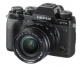

器材库 > APS及其以下画幅可换镜头数码相机 > X-T2

规格总览
产品类型
APS画幅可换镜头数码相机
发布日期
2016-07-07
影像规格
影像传感器
X-Trans CMOS III
影像传感器尺寸
23.6×15.6mm
有效像素
2430万
影像处理器
X-Processor Pro
静态图像尺寸
L: (3:2) 6000×4000 / (16:9) 6000×3376 / (1:1) 4000×4000 M: (3:2) 4240×2832 / (16:9) 4240×2384 / (1:1) 2832×2832 S: (3:2) 3008×2000 / (16:9) 3008×1688 / (1:1) 2000×2000
静态图像格式
JPEG, RAW, RAW+JPEG
短片尺寸
[4K (3840x2160)] 29.97p / 25p / 24p / 23.98p 100Mbps 最长约10分钟 [Full HD (1920x1080)] 59.94p / 50p / 29.97p / 25p / 24p / 23.98p 100Mbps最长约15分钟 [HD (1280x720)] 59.94p / 50p / 29.97p / 25p / 24p 50Mbps最长约30分钟
短片格式
MPEG4-AVC/H.264
音频格式
线性PCM/立体声48KHz示例
防抖系统
OIS型号镜头支持
除尘系统
超声波振动
镜头和对焦
镜头卡口
Fujifilm X
对焦系统类型
智能高速AF（TTL对比AF/TTL相位检测AF）
曝光控制
测光系统
TTL256区测光
测光模式
中央重点测光, 点测光, 平均测光, 多重测光
曝光模式
P（程序AE）/（A光圈优先AE）/S（快门速度优先AE）/M（手动曝光）
胶片模拟模式
15种模式（PROVIA/标准、Velvia/鲜艳、ASTIA/柔和、经典正片、PRO Neg.Hi, PRO Neg.Std、黑白、黑白+黄色滤镜、黑白+红色滤镜、黑白+绿色滤镜、Sepia、ACROS、ACROS+黄色滤镜、ACROS+红色滤镜、ACROS+绿色滤镜）
创意滤镜
玩具相机/微缩景观/流行色彩/高调/低调/动态色调/柔焦/局部色彩（红色/橙色/黄色/绿色/蓝色/紫色）
快门类型
焦平面快门
快门速度
机械快门：4-1/8000秒（P）、30-1/8000秒（所有模式）、B门最高60分钟、T门：30-1/8000秒 电子快门：30-1/32000秒、B门固定1秒、T门：30-1/32000秒 机械+电子快门：4-1/32000秒（P）、30-1/32000秒（所有模式）、B门最高60分钟、T门：30-1/32000秒
闪光同步速度
1/250秒或更慢
曝光补偿
±5EV以1/3EV级调整
自动包围曝光
±2EV / ±5/3EV / ±4/3EV / ±1EV / ±2/3EV / ±1/3EV
ISO感光度
标准输出感光度： 自动1/自动2/自动3（最高达ISO12800）/ISO200至12800（1/3步长） 扩展输出感光度： ISO100 / 25600 / 51200
白平衡
自动场景识别/自定义1～3/色温选择（2500K～10000K）/ 预设： 晴天、阴天、荧光灯（日光）、荧光灯（暖白）、荧光灯（冷白）、白炽灯、潜水
自拍
10秒 / 2秒
连拍
约14.0帧/秒[仅限电子快门]（JPEG： 42幅、无损压缩RAW： 28幅、未压缩RAW： 25幅）
取景器/显示屏
取景器
OLED电子取景器
取景范围
100%
取景放大倍率
0.77倍
屈光度调节范围
-4～+2m-1
LCD尺寸
3.0英寸
LCD像素
162万
LCD特性
翻转屏
文件输入/输出
存储卡
SD/SDHC, SDXC
数据接口
USB3.0
视频/音频接口
D型HDMI接口
无线功能
Wi-Fi
支持打印协议
EXIF Print
电源
电池
NP-W126S锂离子电池
续航能力
安装XF35/1.4 R时，约340幅（标准模式）、约1000幅（配VPB-XT2增能竖拍手柄时）连续视频拍摄：约103分钟（脸部检测功能关闭）
机身规格
材质
镁合金
颜色
黑色
尺寸
132.5×91.8×49.2mm
重量
仅机身约457g / 含电池和存储卡约507g
其它
配件端口
遥控线, 热靴, 麦克风输入端子
工作温度
-10 ~ +40℃
工作湿度
10 - 80%
附件
锂离子电池NP-W126S，电池充电器BC-W126， 热靴式闪光灯EF-X8， 肩背带， 机身盖， 带夹， 夹附加工具， 热靴盖， 增能竖拍手柄接口盖， 同步端口盖， 使用说明书
meirenyu2017-11-23 16:474.63 分
操作性 4.50功能性 4.50美观性 4.50趣味性 4.50耐用性 5.00性价比 4.00解像力 5.00色彩还原 5.00
金口心2016-09-28 08:214.56 分
操作性 5.00功能性 5.00美观性 5.00趣味性 4.00耐用性 4.50性价比 3.50解像力 4.50色彩还原 5.00
金口心2016-09-27 09:25
产品图 / 样片
X-T2
评测 / 相关文章
- 详细内容 （存档）
- 对焦再进步 上手富士旗舰X-T2 （存档）
- ［行情］双重优惠购 富士X-T2新品预售活动开启 （存档）
- ［资讯］“快·破界” 富士X-T2震撼登陆上海P&I （存档）
- ［资讯］富士X-T2测试：对焦性能让人兴奋 （存档）
- ［资讯］富士X-T1&T2、X-Pro2全面大PK （存档）
- ［资讯］富士X-T2上市时间推迟到9月 （存档）
- ［资讯］富士X-T2与神秘富士X镜头惊现海外 （存档）
- ［资讯］富士X-T2与X-T1外观尺寸比较 （存档）
- ［资讯］高手对决 富士X-T2 VS 索尼A6300高感对比 （存档）
相关文章
- ［行情］双重优惠购 富士X-T2新品预售活动开启 （存档）
- ［资讯］“快·破界” 富士X-T2震撼登陆上海P&I （存档）
- ［资讯］富士X-T2测试：对焦性能让人兴奋 （存档）
- ［试用］对焦再进步 上手富士旗舰X-T2 （存档）
- ［资讯］富士X-T1&T2、X-Pro2全面大PK （存档）
- ［资讯］富士X-T2上市时间推迟到9月 （存档）
- ［资讯］富士X-T2与神秘富士X镜头惊现海外 （存档）
- ［资讯］富士X-T2与X-T1外观尺寸比较 （存档）
- ［资讯］富士胶片发布高级无反相机X-T2 （存档）
- ［资讯］高手对决 富士X-T2 VS 索尼A6300高感对比 （存档）
- ［资讯］富士X-T3与X-T2的JPEG画质对比 （原站已下线）
- ［资讯］富士即将发布多款X系列相机固件更新 （存档）
- ［资讯］富士X-Pro2等固件更新发布 （原站已下线）
- ［行情］富士X-T2抢购送好礼 （原站已下线）
- ［资讯］富士推出X-T2碳晶灰和X-Pro2石墨灰 （原站已下线）
- ［资讯］DP公布2016年度相机获奖结果 （存档）
- ［资讯］JCII公布年度历史相机 索尼适马成大赢家 （存档）
- ［资讯］Imaging Resource评选本年最牛相机 （存档）
- ［资讯］富士公布X-T2最新固件1.10下载 （原站已下线）
- ［资讯］JPG直出哪家强 八家相机画质大比拼 （存档）
- ［资讯］提升工作效率 富士将发布X-T2新固件 （原站已下线）
- ［资讯］看看富士用户最常用的镜头 （原站已下线）
- ［行情］好消息 富士X-T2预订优惠活动开始 （原站已下线）